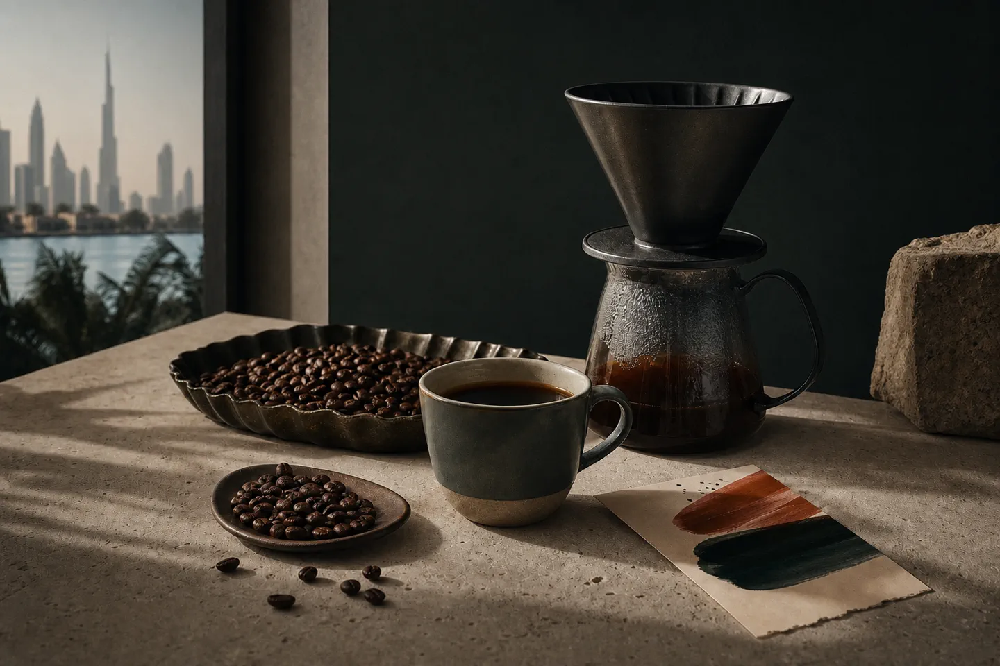
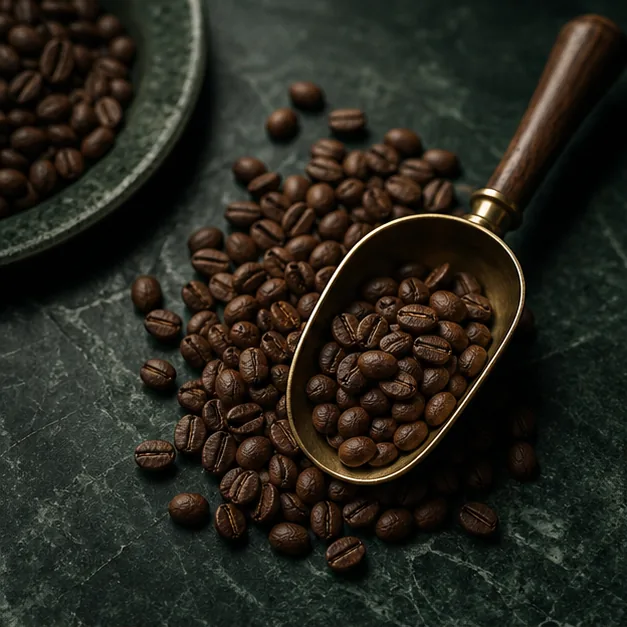
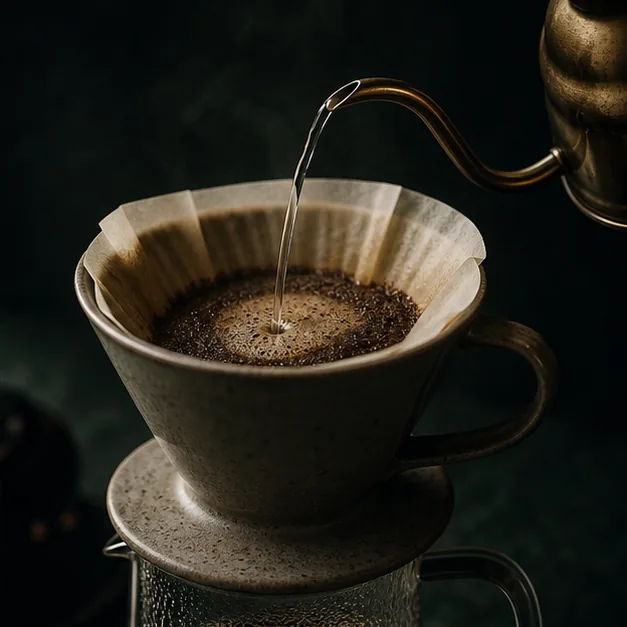

Hinterland / specialty coffee
MAKE ORIGIN USEFUL BEFORE IT BECOMES TECHNICAL.
Specialty coffee customers care about detail, but they decide through taste, brew method and the promise of a better daily cup.
Choose your roast profileTaste-led entry points make origin depth, delivery cadence and a wholesale service route easier to discover at the right moment.
Brand feature
TRANSLATE DETAIL INTO A CUP SOMEONE CAN CHOOSE.
The page opens through taste and brew ritual. Origin, producer and process deepen the decision after a visitor already knows what they want to drink.

Roast profile
CHOOSE THE CUP BEFORE THE COUNTRY.
Each route translates the choice into a useful taste, brew method and a reason to return for another bag.
Sweet and round / ColombiaPlum, caramel and cacao for a repeated daily cup across filter and milk.

Service route
ONE BAG BECOMES A REPEATABLE COFFEE RHYTHM.
Subscription holds profile, cadence and roaster rotation in one relationship. Wholesale coffee begins with service, not a retail checkout.
Select a bag with origin context.